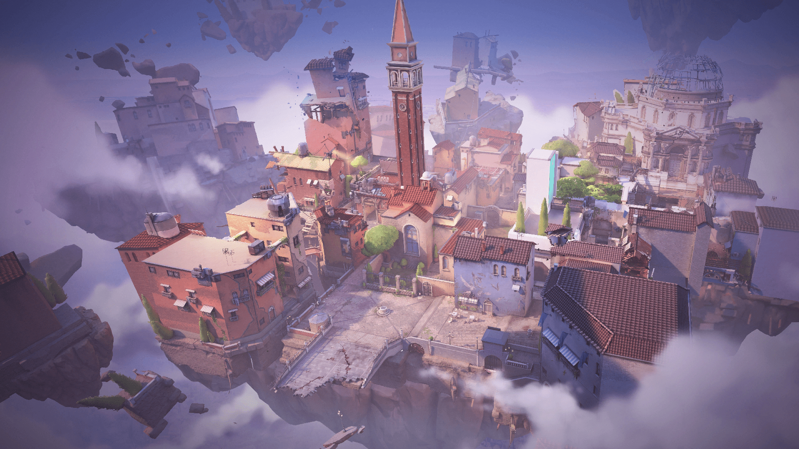

MAPS

ASCENT
Di Ascent, kamu bisa bersembunyi dalam ruangan yang dengan akses buka tutup pintu secara bebas. Dengan banyak ruang terbuka tentunya, open war akan mudah terjadi dan kamu bisa melalui Spike Plant Site sebagai jalan pintas.
BIND
Aspek unik dari peta ini adalah ada dua teleporter satu arah. Satu teleporter membawa Anda dari long B ke sisi pancuran penyerang. Yang lain membawa Anda dari A pendek ke sisi hookah penyerang.